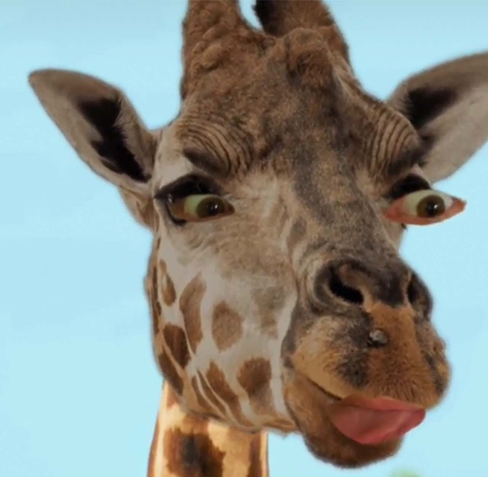

about meh

In this section I will talk about myself, but likely, I'll talk about my dog instead. Leroy Brown is the champion of champions, the dog of dogs, the ULTIMATE cutie. His smile can light up the room and he likes long walks at sunrise. Is he hungry? Always.
Adopted over 4 years ago, Leroy Brown moved to Minneapolis from what, like, Alabama. He was rescused from Second Hand Hounds who fostered and cared for him while he recovered from heartworm. Poor dude, tbh. But, alas, he was adopted by Benito Gonzalez and his partner, Bobby.